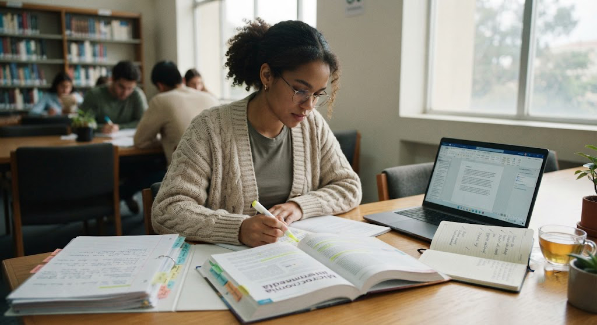

¿Por qué los hábitos son tan importantes?
Las personas exitosas no alcanzan sus objetivos únicamente por motivación. La diferencia está en las acciones que repiten todos los días. Cuando conviertes una buena práctica en un hábito, dejas de depender de las ganas para empezar a depender de la disciplina.
Un estudiante con buenos hábitos aprovecha mejor su tiempo, aprende con mayor facilidad y experimenta menos estrés durante el semestre.

"No necesitas ser perfecto todos los días; solo necesitas ser constante."
— EnfocaT1. Planificar cada día
Antes de comenzar tus actividades dedica cinco minutos a organizar tus tareas. Tener un plan reduce la procrastinación y aumenta la productividad.
📝 Agenda
Anota todas tus tareas importantes.
🎯 Prioridades
Empieza siempre por la actividad más importante.
⏰ Horarios
Define bloques específicos para estudiar.
✅ Revisión
Evalúa al final del día lo que lograste.
2. Dormir bien para aprender mejor
Dormir entre 7 y 9 horas cada noche mejora la memoria, la concentración y la capacidad para resolver problemas. Estudiar hasta la madrugada puede parecer productivo, pero normalmente reduce tu rendimiento al día siguiente.
😴 Dato importante
Mientras duermes, el cerebro organiza y fortalece la información aprendida durante el día. Un buen descanso mejora significativamente el aprendizaje.
3. Eliminar las distracciones
Las notificaciones, las redes sociales y el celular pueden romper fácilmente tu concentración. Reducir estas interrupciones te permitirá estudiar menos tiempo y aprender más.
📵 Silencia el celular
Activa el modo "No molestar" durante tus sesiones de estudio.
🎧 Ambiente tranquilo
Busca un lugar silencioso donde puedas concentrarte sin interrupciones.
🖥️ Solo una tarea
Evita tener muchas pestañas abiertas o cambiar constantemente de actividad.
⏳ Usa un temporizador
La técnica Pomodoro puede ayudarte a mantener el enfoque durante más tiempo.
4. Repasar constantemente
No esperes hasta el día anterior al examen para estudiar. Dedicar unos minutos cada día a repasar hace que la información permanezca mucho más tiempo en tu memoria.
📚 Consejo
Dedica entre 10 y 15 minutos al final del día para revisar lo que aprendiste en clase.
"Aprender poco todos los días vale más que estudiar muchas horas solo una vez."
— EnfocaT5. Descansar también es estudiar
El cerebro necesita pausas para mantener un buen rendimiento. Descansar unos minutos después de una sesión intensa mejora la concentración y evita el agotamiento mental.
- ✅ Levántate de la silla.
- ✅ Estira el cuerpo.
- ✅ Hidrátate.
- ✅ Descansa la vista mirando un punto lejano.
- ✅ Respira profundamente durante unos minutos.
💡 Consejo EnfocaT
No intentes cambiar todos tus hábitos de un solo golpe. Empieza con uno, practícalo durante varias semanas y, cuando ya forme parte de tu rutina, incorpora el siguiente. Los cambios pequeños y constantes generan resultados mucho más duraderos.
Conclusión
Los estudiantes exitosos no nacen con una ventaja especial; construyen hábitos que les permiten aprender mejor, administrar su tiempo y mantener la disciplina incluso cuando la motivación disminuye.
Empieza hoy mismo implementando uno de estos hábitos. Con el paso de los días notarás mejoras en tu concentración, tu organización y tus resultados académicos. Recuerda: el progreso constante siempre supera a la perfección.
📤 Comparte este artículo
📚 Artículos relacionados
🚫 Cómo dejar de procrastinar
Descubre estrategias para vencer la procrastinación y empezar tus tareas sin excusas.
🍅 La técnica Pomodoro
Aprende a estudiar utilizando bloques de concentración para rendir más en menos tiempo.
😴 Sueño y productividad
Descubre cómo descansar correctamente puede mejorar tu rendimiento académico.